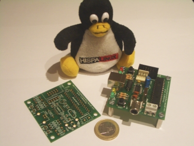
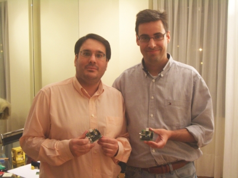
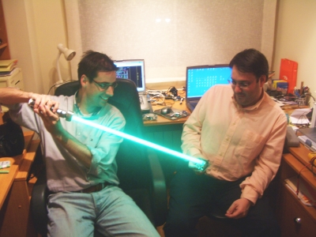

{kind=link}

Ayer se pusieron en marcha los primeros prototipos de la tarjeta Chronopic, diseñada por Ricardo Gómez para el Proyecto Chronojump.
Chronopic es hardware libre. Esto significa que están disponibles todos sus planos para que cualquier persona, empresa o institución la pueda estudiar, modificar, distribuir, fabricar o vender.
Además, ha sido diseñada con la herramienta libre Kicad. Se trata de una de las primeras placas libres diseñada exclusivamente con software libre.
La financiación ha sido posible gracias a que el proyecto Chronojump ganó el primer premio en los “Trophees du Libre”. Xavier de Blas ha destinado una parte del dinero para la financiación del hardware. ¡Muchísimas gracias!
{kind=link}

En esta foto estamos Ricardo y yo junto a la Chronopic 3.0. Se puede observar lo pequeña que ha quedado.
{kind=link}

Y para finalizar realizamos su bautizo friki: que la fuerza esté con la Chronpic 3.0
PD.- Estoy esperando a que Ricardo me mande la versión con los
últimos cambios para publicarla. Hoy o mañana estará disponible.